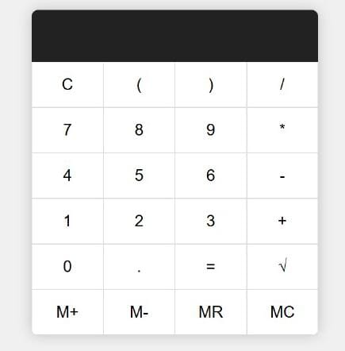
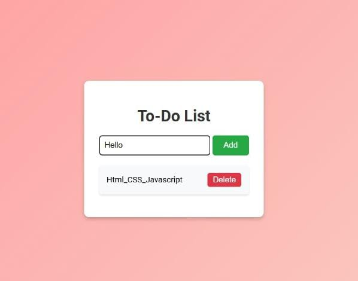
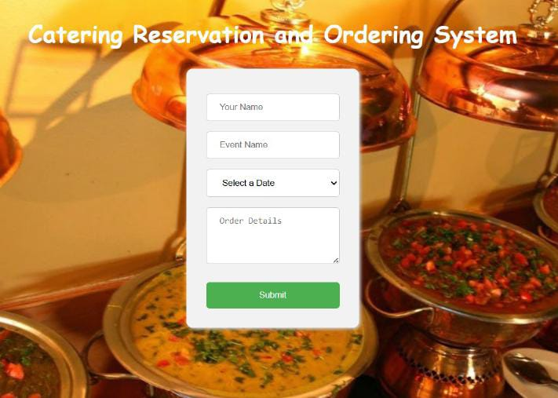

Hello Everyone,
My name is Keshav Sharma
and I am an aspiring and passionate Web Developer. I enjoy coding and am thrilled
to learn new skills. I am skilled in Web Development and Django Python.
I am currently pursuing my bachelor degree in Bachelors of Computer Applications in The Assam Kaziranga University. I am in my final year.
I enjoy sports activity and participating in public speaking.
I am a national level Kabbadi player.
I also own a business.
The Simple Calculator is a web-based application designed to perform basic arithmetic operations such as addition, subtraction, multiplication, and division. The calculator provides a user-friendly interface for quick and easy calculations. This project showcases fundamental skills in web development, including HTML, CSS, and JavaScript.
The To-Do List application is a straightforward, user-friendly tool designed to help individuals manage their tasks efficiently. This application allows users to create, read, update, and delete (CRUD) tasks, ensuring they can keep track of their daily activities with ease.
The Catering Reservation and Ordering System is a comprehensive web application designed to streamline the process of booking catering services and ordering food. It caters to both administrators and users, providing a seamless experience for managing reservations, orders, and product details. This system ensures efficiency, accuracy, and ease of use for catering businesses and their clients.
